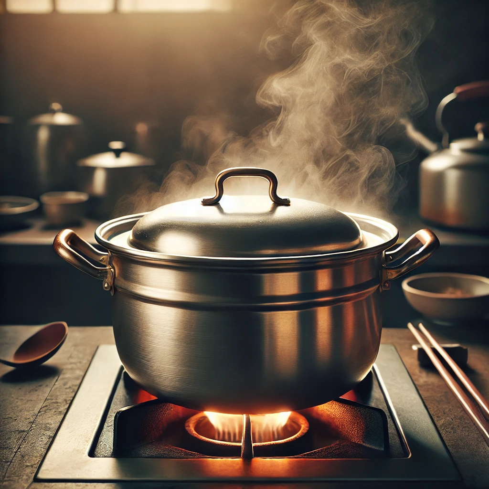

Pork and Chicken Ramen Broth

Description
This rich and flavorful ramen broth combines the robust flavors of pork knuckle and chicken bones,
simmered for hours with a whole head of garlic, sweet apple, and aromatic vegetables to create a deeply
satisfying base. Unblanched pork bones add a bold character, while cleaned chicken bones keep the stock
balanced and smooth. This recipe yields a luscious, slightly cloudy broth with a full-bodied mouthfeel, perfect
for pairing with classic Japanese tare seasonings like shoyu, miso, or shio. Add a dash of
fragrant aromatic oil, such as black garlic or green onion oil, to elevate the flavors and
create an unforgettable bowl of ramen.
Ingredients
- げんこつ (pork knuckle): 1.5–2 kg (unblanched)
- 鶏ガラ (chicken bones): 2 kg, innards and excess blood vessels removed
- 玉ねぎ (onion): 1 whole onion, halved
- ねぎ (green onion): 1 large stalk, roughly chopped
- ニンニク (garlic): 1 whole head, cloves left unpeeled
- 豚ミンチ (ground pork): 200–300 grams
- リンゴ (apple): 1 medium apple, cut into chunks
- 昆布 (kombu): 10–15 cm piece
- Water: 6 liters
Steps
- Prepare the Chicken Bones: Remove any innards and excess blood vessels from the chicken bones. This step helps keep the flavor clean and prevents bitterness.
- Start the Stock: Place the pork knuckle and prepared chicken bones in a large pot,
cover with 6 liters of fresh water, and bring to a boil. Reduce to a gentle simmer.
- Add Ingredients: Add the halved onion, whole garlic head,
green onion, ground pork, apple, and kombu to the pot.
- Simmer: Keep at a low simmer for 6–8 hours, skimming off any impurities
that rise to the surface as the pork bones release flavors and fats. The longer simmer will bring out a richer flavor and texture.
- Strain: Remove and discard the solids, then strain the broth through a
fine-mesh strainer for a full-bodied, slightly cloudy, robust stock.